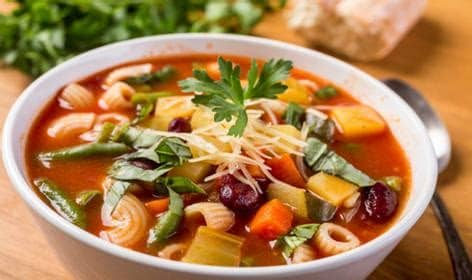

Minestrone

Ingredients
Switch to Steps
-
4 Large Carrots
-
3 Celery Stalks
-
1 Red Onion
-
2 cups Green Beans
-
30 oz Red Kidney Beans
-
6 cups Vegetable Broth
-
15 oz Tomato Sauce
-
2 tsp Italian Seasoning
-
1 tsp Crushed Red Pepper
-
3/4 tsp Salt
-
1/2 tsp Black Pepper
-
1 Zucchini
-
1 cup Pasta Shells
-
1/2 cup Grated Parmesan Cheese
Steps
Switch to Ingredients
-
Combine carrots, celery, onion, garlic, green beans,
kidney beans, tomato sauce, broth, Italian seasoning,
crushed red pepper, 1/4 tsp salt, and pepper
in a 6-8 qt slow cooker.
-
Cover and cook on Low for 6 to 8 hours.
-
Stir in zucchini, pasta and the remaining 1/2 tsp salt..
-
Cover and cook on Low until the pasta is tender, 15 to 20 minutes more.
-
Serve immediately, topping each serving with about 1 1/2 Tbsp parmesan.